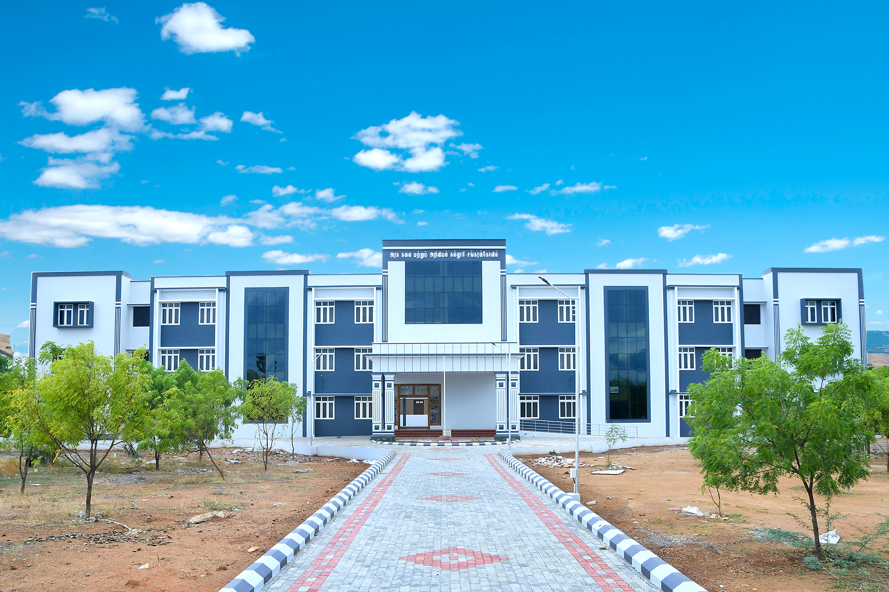

Government Arts and Science College, Sankarankovil
Affiliated to Manonmaniam Sundaranar University | Estd. June 2020
Affiliated to MSUniv, Tirunelveli
Co-Educational | Tenkasi District
Co-Educational | Tenkasi District

Founded on 17 June 2020, Government Arts and Science College, Sankarankovil was established to bring higher education to the socially and economically backward communities of Tenkasi District. The college was inaugurated at a temporary premises and later shifted to its permanent Government building, inaugurated by the Chief Minister of Tamil Nadu on 22 January 2024.
Affiliated to Manonmaniam Sundaranar University, the college is situated on Tiruvengadam Road on a 3.31-acre campus. It offers five UG programmes — B.A. English, B.A. Sociology, B.Com, B.Sc. Computer Science, and B.Sc. Statistics — and currently serves 775 students with 29 teaching and 11 non-teaching staff.
Read MorePrincipal (FAC)
It gives me immense pleasure to welcome you to Government Arts and Science College, Sankarankovil. For nearly four decades, our institution has remained steadfast in its commitment to providing quality higher education that blends traditional values with modern pedagogical practices.
Our dedicated faculty members, state-of-the-art laboratories, well-stocked library, and a supportive campus community create the ideal setting for students to discover their potential and realize their aspirations.
“Education is not the filling of a pail, but the lighting of a fire. At Government Arts and Science College, we ignite that fire within every student.”
We offer programmes across 5 departments designed to equip students for a successful career.
B.A. English — literature, linguistics, and communication skills with language lab and literary club activities.
ExploreB.Com — accounting, finance, taxation, and business studies with Tally and GST certification courses.
ExploreB.Sc. Computer Science — programming, data science, and software engineering with placement support.
ExploreB.Sc. Statistics — applied statistics, data analytics, and probability theory with R and SPSS training.
ExploreB.A. Sociology — social structures, community development, and research methodology with field studies.
Explore| S.NO | Name | Designation |
|---|---|---|
| 1 | Dr. G. VENUGOPAL | PRINCIPAL [FAC] |
| 2 | Dr R. SHENBAGAVALLI | ASSOCIATE PROF. & HEAD OF COM.SCIENCE & STATISTICS |
| 3 | Dr K. KALAGOPI | ASSOCIATE PROF. & HEAD OF TAMIL AND ENGLISH |
| 4 | Dr N. SUKUMARAN | ASSISTANT PROF. & HEAD OF SOCIOLOGY |
| 5 | Dr D. SELVAM | PHYSICAL DIRECTOR |
| S.NO | Name of Committee | Composition |
|---|---|---|
| 1 | NAAC | |
| 2 | IQAC | |
| 3 | NIRE & AISHE | |
| 4 | RUSA | |
| 5 | COLLEGE WEBSITE | |
| 6 | UMIS DATA MAINTENANCE | |
| 7 | PLACEMENT CELL | |
| 8 | NAAN MUDHALVAN | |
| 9 | PUDHUMAI PENN AND THAMIZH PUDHALVAN | |
| 10 | SPORTS COMMITTEE | |
| 11 | DISCIPLINE | |
| 12 | ANTI-HARASSMENT | |
| 13 | VISHAKAHA COMMITTEE [ICE] | |
| 14 | SC & ST WELFARE COMMITTEE | |
| 15 | COLLEGE CALENDER PREPARATION | |
| 16 | COLLEGE MAGAZINE AND ANNUAL REPORT PREPARATION COMMITTEE | |
| 17 | STUDENT WELFARE | |
| 18 | PWD COORDINATION COMMITTEE |